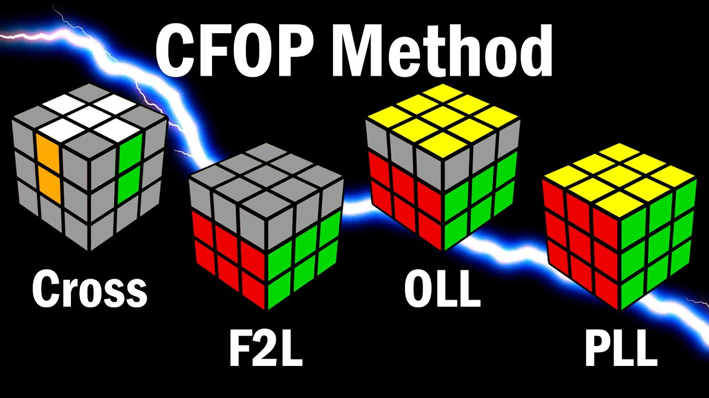
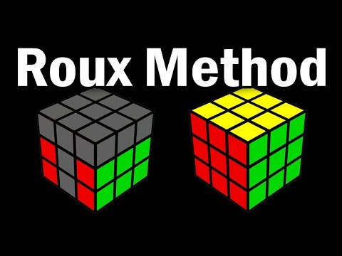
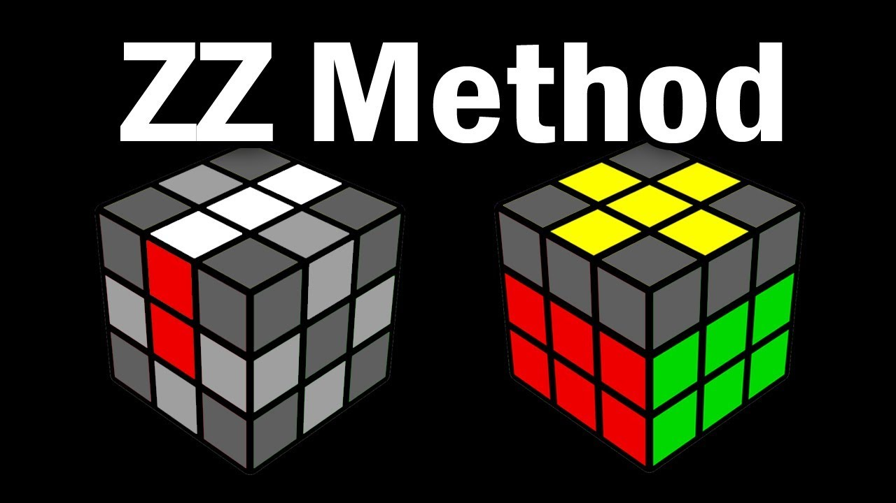

Cross, F2L, Oll, Pll
Ez a legjobban elterjedt metódus és a legtöbb világrekordot ezzel a metódussal érték el. A kezdő metódus igazából egy könnyebben megérthető, több lépésre bontot, lebutított CFOP. A különbség az, hogy itt a kereszt után az első kettő réteget egyszerre rakjuk ki, majd az utolsó réteg kettő lépésre van bontva: orientáció, vagyis a felső szint – fehér kereszt esetén a sárgát – színre hozzunk és permutáció, vagyis a maradék 8 elemet a megfelelő helyére vigyünk. Az első kettő réteg kirakásához nem szükséges algoritmusokat betanulni, lehet teljesen intuitív, bár kell hozzá egy kis gyakorlás és a kocka mozgásának megértése. Az orientáláshoz 57 algoritmus tartozik, míg a permutáláshoz 21.
CFOP/Fridrich
ROUX
A második legjobban elterjedt metódus, világ rekordot még nem döntöttek vele, de a WCA oldalán a legjobb 100 közül van aki Roux-t használ. Itt nem a rétegeken van a hangsúly hanem blokképítésen. A kirakás menete a következő: 1x2x3 blokkot kell kirakni, majd még egyet vele szemben. Következő lépés a CMLL, ami a maradék 4 sarkot orientálja és permutálja, ez 42 algoritmus. Utolsó lépés pedig LSE/L6E, utolsó 6 él, amit kizárólag M és U lépésekkel érdemes kirakni, ezekre lehet algoritmust tanulni, de nem szükséges, intuitívan is ki lehet rakni.
ZZ
A ZZ metódus a CFOP forgatásszámán próbál javítani, ezt azzal éri el, hogy mielőtt neki állnánk a rétegeknek előtte megcsináljuk at EOLine-t, ami annyit jelent, hogy orientáljuk az összes élt és a keresztnek kirakjuk a F és B élét. Ezzel azt lehet elérni, hogy kizárólag R L U lépésekkel ki lehet rakni a kockát és nem kell átfogni.
Petrus
Ezt a metódust már nem használja senki. Az oka, hogy ez a metódus a legkevesebb forgatást probálja elérni, annak árán, hogy kirakás közben sokat kell megállni gondolkodni. Viszont ma már nem nehéz forgatni a kockát és a többi három sokkal hatékonyabb.